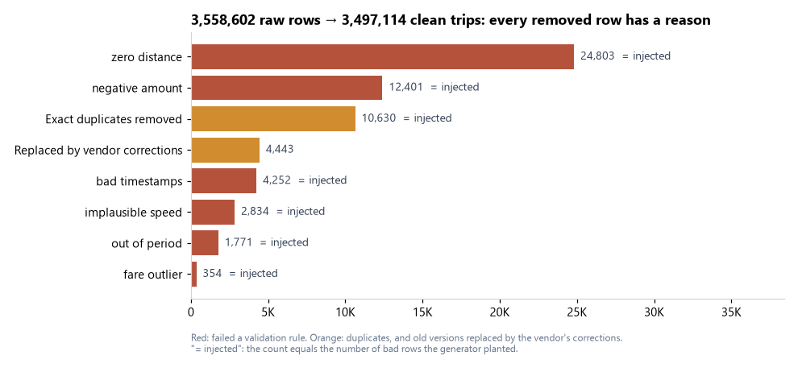
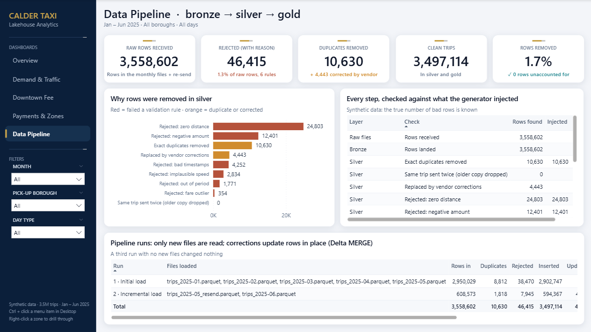
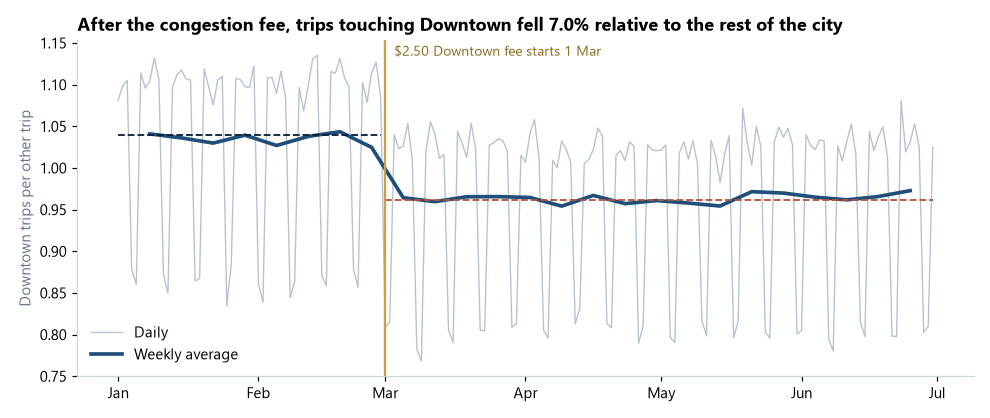
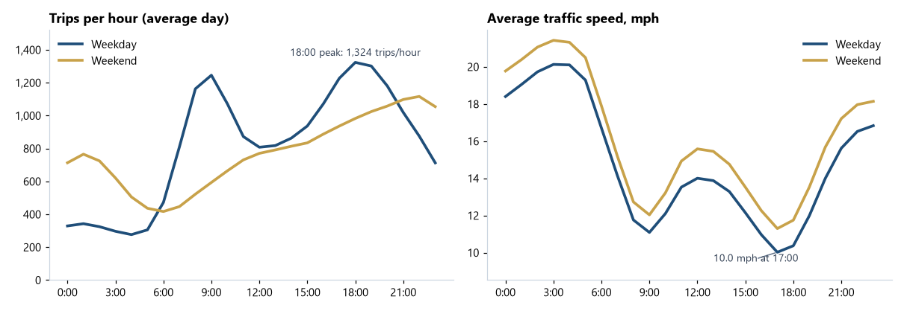
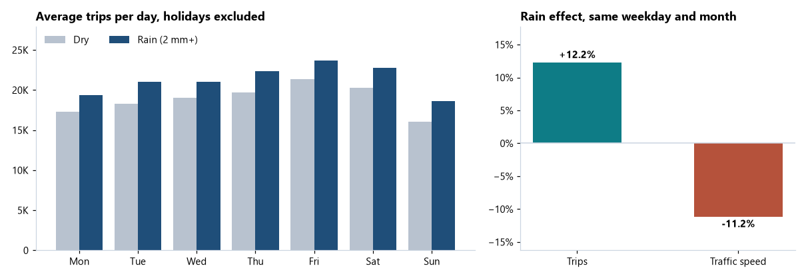
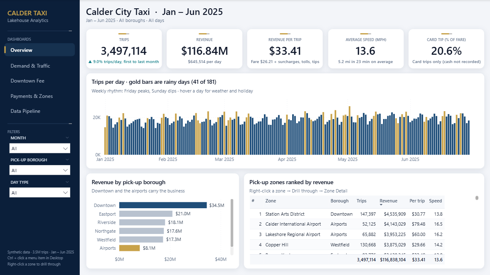
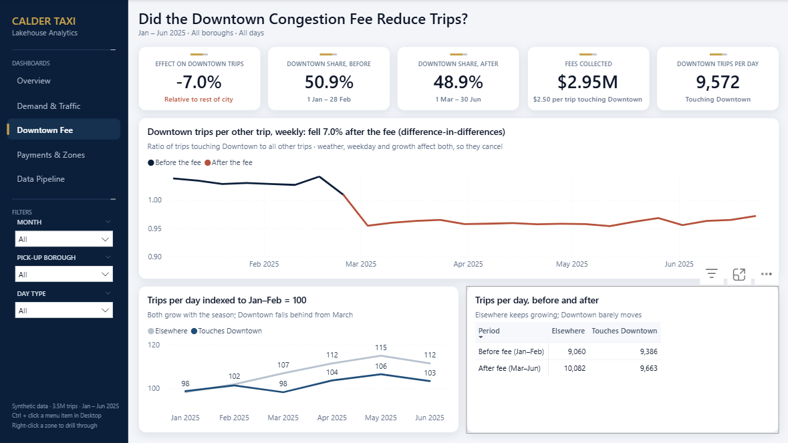
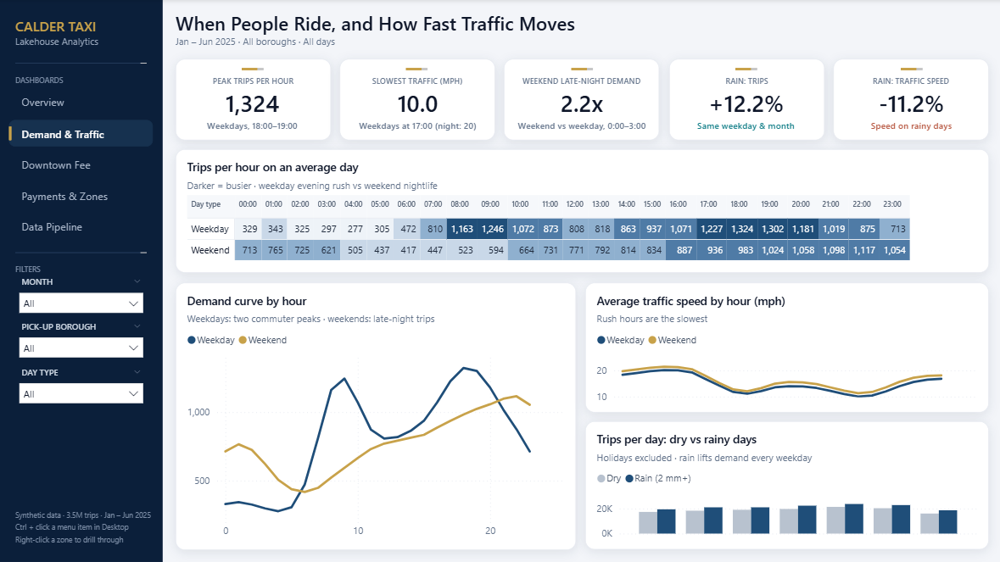
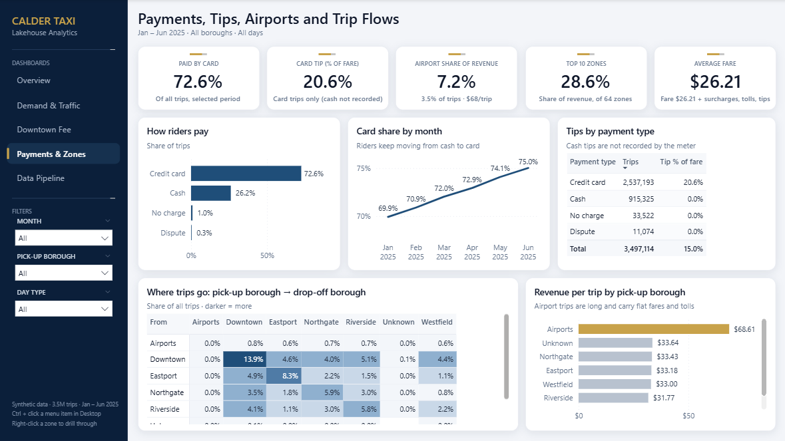

Data engineering · PySpark · Delta Lake · Databricks
A bronze → silver → gold taxi lakehouse
Calder City publishes a monthly file of every taxi trip. I built an incremental PySpark and Delta Lake pipeline (Databricks notebooks plus an Asset Bundle job) that loads only new files, rejects bad rows with a reason, applies vendor corrections with MERGE, and reconciles every row. On top of it: an analysis of demand, rain and a new Downtown congestion fee, and a Power BI dashboard.
Synthetic data. 3.56 million trip records (Jan – Jun 2025) from a documented generator, with deliberately injected problems and schema changes. The generator records what it injected, so every cleaning step and finding is checked against the truth.
The pipeline
Three runs: the initial load (Jan – May), an incremental load (June plus the vendor's 13 May re-send), and a re-run with nothing new.
| Run | Rows in | Duplicates | Rejected | Inserted | Updated | Gold rebuilt |
|---|---|---|---|---|---|---|
| 1 · Initial load (5 files) | 2,950,029 | 8,812 | 38,470 | 2,902,747 | 0 | all |
| 2 · Incremental (2 new files) | 608,573 | 1,818 | 7,945 | 594,367 | 4,443 | May, Jun |
| 3 · Re-run (no new files) | 0 | 0 | 0 | 0 | 0 | none |
- Bronze reads only files it has not loaded before and conforms three schema versions (a renamed column, a changed type, a column added in March), logging each change.
- Silver applies six validation rules, removes duplicates, keeps the latest version of each trip, and MERGEs into the trips table: corrected records update rows in place instead of duplicating them.
- Gold rebuilds only the months touched by new data. A quality notebook fails the job if a single row is unaccounted for, and uses Delta time travel to show what the correction changed.


Findings
- The $2.50 Downtown congestion fee cut trips touching Downtown by 7.0% (95% CI 6.5–7.4%) relative to the rest of the city, and collected $2.95M in four months.
- Rain adds 12.2% trips and slows traffic 11.2%, holding weekday and month constant.
- Weekday demand peaks at 18:00 when traffic is slowest (10 mph); weekends peak at 22:00 with 2.2x the weekday late-night demand.
- Card share rose from 69.9% to 75.0%; card riders tip 20.6%. Airport trips are 3.5% of trips but 7.2% of revenue.



Power BI dashboard



